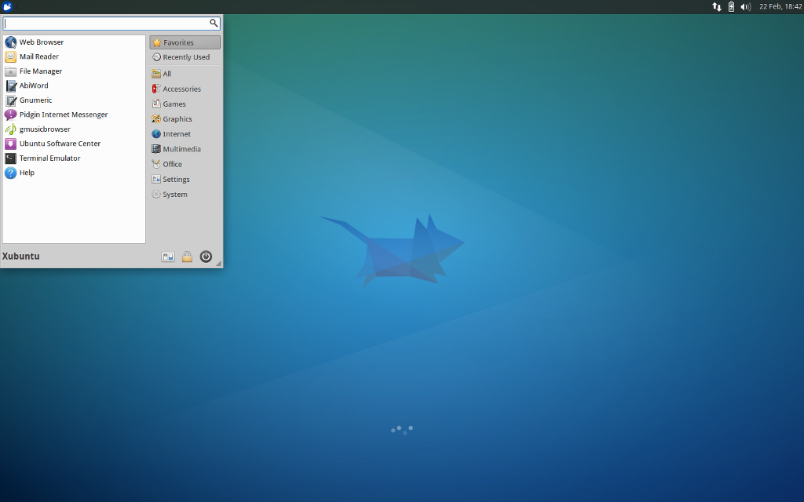

Vaš brskalnik ne podpira zmožnosti zahtevane s strani impress.js, zato bo uporabljena bolj preprosta in ne tako lepa predstavitev.
Priporočamo vam namestitev najnovejšega brskalnika Google Chrome ali Mozilla Firefox.
Zgodovina
Linux
1983 – začetek projekta GNU (prosto dostopna programska oprema)
Linus Torvalds (na sliki levo) je aprila leta 1991 (v študentskih letih) začel pisati operacijski sistem
na osnovi Minixa (Unixu podoben operacijski sistem) in ga poimenoval Linux.
1993 – začetek razvijanja distribucije Debian (napisal študent Ian Murdock)
Ubuntu
Ubuntu sponzorira družba Canonical, ki je v lasti Marka Shuttlewortha.
Mark je južnoafriški podjetnik, ki je leta 1995 ustanovil podjetje Thawte,
specializirano za delo z digitalnimi potrdili ter varnostjo na internetu.
Štiri leta pozneje je podjetje prodal za 570 milijonov dolarjev.
Leta 2002 je kot drugi vesoljski turist poletel v vesolje nato pa leta 2004 ustanovil
podjetje Canonical, ki skrbi za razvoj, promocijo ter nudenje poslovne podpore za Ubuntu.
Kaj je Ubuntu
- Ubuntu je operacijski sistem, ki temelji na Debianu.
- Uporablja Linux jedro ter izide vsakih 6 mesecev - v aprilu ter v mesecu oktobru.
- Izdaje z oznako LTS imajo 5 letno podporo, kar pomeni, da Canonical zagotavlja 5 let varnostne posodobitve in druge popravke.
- Vsebuje vse, kar potrebujete za vsakodnevno delo!
Kaj pomeni Ubuntu?
V afriških jezikih
zulu ter
ksosa pomeni človeškost.
Samo ime izvira iz južnoafriške humanistične filozofije ubuntu, ki v splošnem pomeni »Sem, kar sem zaradi tega, kar smo vsi«.
Strojne zahteve
Ubuntu / Kubuntu
- najmanj 384MiB RAMa (priporočljivo več)
- najmanj 5GB prostega prostora na disku (priporočljivo več)
- najmanj 700MHz procesor (ja - priporočljivo je več)
Za starejše računalnike pa se priporoča
Lubuntu / Xubuntu
- najmanj 128MiB RAMa
- najmanj 5GB prostega prostora na disku
- najmanj 286MHz procesor
Različice Ubuntu
Zadnja različica
- Zadnja različica je 13.04
- Izšla 25. aprila 2013. Podpora do januarja 2014.
- Zadnja LTS različica je 12.04 LTS
- Izšla je 26. aprila 2012. Oznaka LTS je kot smo že omenili za dolgotrajno podporo (5 let - do aprila 2017).
- Kako izgleda? Oglejte si sliko spodaj
Namizna okolja
Kaj je namizno okolje?
Namizno okolje je pravzaprav vse kar vidimo, ko zaženemo operacijski sistem.
Od grafičnega vmesnika do oken ter vidnih vrstic na zaslonu.
Ubuntu - najbolj priljubljena različica; uporablja namizno okolje GNOME
Kubuntu - druga najbolj priljubljena različica.
Gre za Windowsom podobno različico (po grafiki); uporablja namizno okolje KDE
Xubuntu - preprosto namizno okolje Xfce; za starejše računalnike

Ostala namizja / različice
- Lubuntu - namizno okolje Lxde; prav tako za starejše računalnike
- Edubuntu - distribucija namenjena izobraževanju (za šole ter otroke)
- Ubuntu Studio - distribucija namenjena predstavitveni (avdio/video) produkciji
- Mythbuntu - distribucija ustvarjena za hišni kino; uporablja MythTV ter namizno okolje Xfce
Prednosti in slabosti Ubuntuja
Prednosti
- Odprtost (prilagodljivost, popravki, podpora)
- Dostopnost (popolnoma preveden v 43 jezikov - tudi v slovenščino)
- Brezplačen
- Enostavno nameščanje programov
- Velika izbira programov
- Samodejno posodabljanje nameščenih programov
- Trdi disk ne potrebuje defragmentacije
- Hiter zagon in izklop sistema
- Varnost (zelo dobra zaščita pred virusi in zlonamernimi programi a pozor - ni imun)
- Ogromna skupnost
Wine
Določene programe, ki jih uporabljate na operacijskem sistemu Windows, lahko poganjate s programom WINE.
Namestite in zaženete jih tako kot v Windows sistemu.
Na primer: ASP Slovarji, Microsoft Office 2003 ter 2007 in drugi.
Slabosti
- Programska podpora (Photoshop in drugi razni profesionalni programi, kateri v WINE ne delujejo popolno)
Obstajajo pa alternative!
| Windows |
Ubuntu |
| Adobe Photoshop |
Gimp |
| MS Office |
LibreOffice |
| Windows Media Player |
VLC |
| Internet Explorer |
Firefox/Chrome |
| Outlook |
Thunderbird |
- Deloma strojna podpora (grafične kartice, eksotična strojna oprema)
Živi CD / USB
- Datoteko .iso (katero smo predhodno prejeli z interneta) zapišemo na CD/USB-ključ s pomočjo programa unetbootin
- V nastavitvah BIOS-a izberemo zagon s CD-ja/USB-ja
- Zažene se polnokrven Ubuntu, ki pa je počasnejši in potrebuje nekaj več pomnilnika (počasen je zato, ker mora brati s CD/USB naprave)
- Preizkusimo lahko delovanje strojne opreme in Ubuntu po želji tudi namestimo ali pa ga preprosto uporabimo za varno spletno bančništvo
- Če Ubuntuja ne namestimo, je po ponovnem zagonu računalnik nedotaknjen (ni zapisa na trdi disk oziroma na naš privzeti operacijski sistem).
Pri Ubuntu Slovenija smo naredili tudi video vodnik, ki vam lepo pokaže, kako se zapiše na datoteko .iso CD / USB.
Več na naši Youtube strani - povezava na zadnji prosojnici.
Uporaba
Linux
Linux uporabljate vsak dan! 850.000 (ja to je 850 tisoč!) Android telefonov, kateri uporabljajo jedro Linux se izdela dnevno!
Večina od 700.000 dnevno prodanih televizij uporablja Linux! 9 od 10ih superračunalnikov poganja Linux!
Linux se prav tako uporablja na toasterjih, usmerjevalnikih ter drugih napravah.
Spletne strani kot so Google, Amazon, Twitter,Facebook, Arnes, Ubuntu.si ;-) in mnoge druge uporabljajo Linux strežnike.
Ubuntu
Na namizju ga uporabljajo francoska policija, francoski parlament,
makedonsko ministrstvo za znanost, češka pošta,
dansko ministrstvo za promet, mestne oblasti v Münchnu, nizozemska ministrstva v Hagu, Kitajska,
Malezija, Andaluzijska vlada, Dreamworks, Peugeot in mnogi drugi.
V zadnjem času je Ubuntu strežnik vse več v uporabi tudi za namene računalništva v oblaku.
Prav tako se razvijata Ubuntu za telefone in tablice ter Ubuntu TV.
Skupnost
Podpora ter pomoč
Ubuntu.si je skupnost posameznikov različnih starosti, izobrazbe, znanj …, ki jih druži zanimanje za prost operacijski sistem Ubuntu, ki ga lahko brezplačno in brez obveznosti uporabljate tako doma in v podjetju.
Člani skupnosti Ubuntu v svojem prostem času prostovoljno pomagajo pri reševanju težav drugih uporabnikov Ubuntuja, prispevajo k izboljšavam Ubuntuja (predvsem preko prevajanja) in predstavljajo in promovirajo Ubuntu tistim, ki ga še ne poznajo.
Projekt slovenjenja Ubuntuja in drugih odprtokodnih programov v materinščino je časovno zahteven.
S tem pomagamo tistim, ki ne znajo angleško (dedki in babice), ali pa se udobnejše počutijo, ko uporabljajo sistem v slovenščini.
Več o projektih in kako se pridružiti na
www.ubuntu.si/skupnost.
Kvalitetni prevodi so en od pomembnih faktorjev pri odločanju za uporabo Ubuntuja v podjetjih in javni upravi.
Drugi projekti so Ubuntu v brskalniku - nahaja na spletni strani
https://www.ubuntu.si/ogled/sl
namenjen je vsem tistim, ki bi si radi ogledali izgled in nekatere zmožnosti, Ubuntu urice, prevajalski maratoni,
video vodniki, splavitvene zabave, ta predstavitev.
Več o tem pa na naši spletni strani.
Za pomoč se lahko obrnete na našo spletno stran
www.ubuntu.si ter forum, kjer se mogoče najde odgovor na vaše vprašanje
www.ubuntu.si/forum/ .
Če imate raje družabna omrežja, kot so Facebook ter Google+ oziroma Twitter smo tudi tam prisotni.
Za dodatne informacije oziroma, če nam želite pomagati pa
infoAFNAubuntu.si (ne nudimo pomoči prek e-pošte).